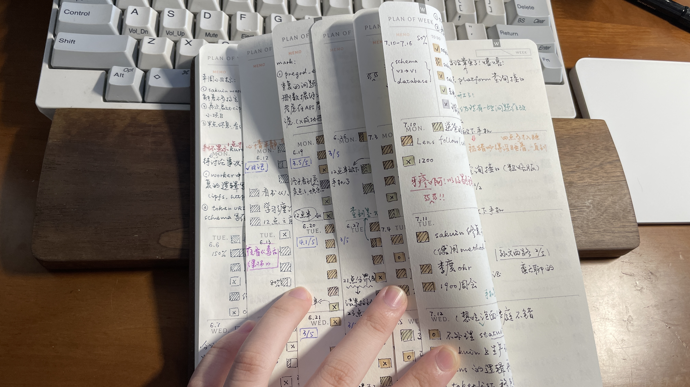
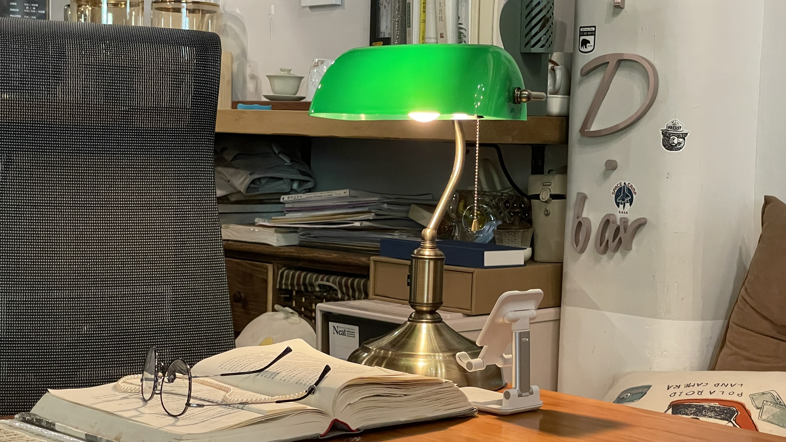
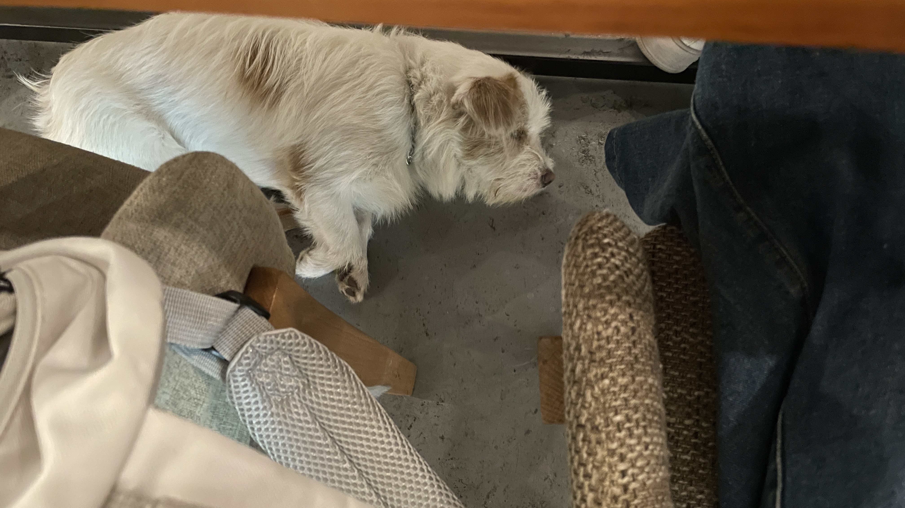

20230731 - 20230806
我鸽但我在
打开B站才意识到，原来我已经断更五个月了，很抱歉鸽了大家这么久！ 偶尔打开私信和评论还能看到大家经常在催更，还有问我还在不在 web3 的。我在我在，虽然我鸽但我还在。
其实用视频的方式分享生活，对我来说是比较奢侈的，这件事情需要非常高的分享欲和大量的时间来剪辑几个相对完整的场景。但年初的时候，我被 ChatGPT 吸引，每天沉迷让它教我各种各样的东西：合约，前端，英语 … 我的学习方式发生了很大的变化，我就无法出一些视频来说我今天学了啥，因为实在是很碎片很杂。
除此之外，我的工作在五月左右渐渐忙起来了，基本上是 10105 的节奏。和以往不同的是，我非常喜欢现在做的工作，忙的时候也不会觉得有多疲惫，反而觉得每天很充实。当然，不好的地方就是忙碌的工作占据了我大量的时间，每天记录生活的方式从视频变成了日记和朴素的 TODO List：

最近工作稍微没那么忙了，分享欲也在渐渐恢复，所以我会先用周报的方式分享我的生活和有意思的事 😆，希望催更的大家也喜欢。
一些输入
最近的输入基本和工作相关，偶尔穿插看一些吃瓜：
- 遇到了 Go 嵌套结构体时，JSON 反序列失败的问题。简单说是，
A结构体自定义了UnmarshalJSON方法，如果B结构体中嵌套了A，那么B结构体在 JSON 反序列中会失败。具体可以看这个 Stackoverflow 的回答。这是一个很小的问题，但在嵌套很多层结构体的情况下，它会变得很难查。
最近 web3 还挺无聊的，上次看新的技术还是 OP Stack，平日里我就是瓜田里的猹，到处吃瓜🤡：
吃瓜 Curve，看了律动的这篇文章：Curve问题，是DeFi「收益病」的表症，里面有一些观点挺有趣的。
吃瓜 BALD，顺便看了如何在 Base 发一个 MEME： 实测｜在Base上发行一个meme，需要花多少钱？
除此之外，在读《当代占星研究》。
这周没有整理输入的东西，现在只能想得起来这些内容了 🤡。
尝试跨出家门
远程办公以来，我有 95% 以上的时间都是在家里办公，我算是一个非常严格的计划党，内心杜绝任何会影响到我的计划的事情。我会担忧咖啡厅的凳子桌子的高度是否合适，担忧人多不多，吵不吵，能不能充电，诸如此类的问题。
在家高效的办公确实能满足我的计划，但是我突然意识到，如果什么事情都在我的计划之内，那好像我的生活会有点无聊。 我需要增加一些随机性，以此提高生活的趣味。
所以这两周，我每周会找两三天的下午，去一个咖啡厅工作。我希望不同的地点，不同的人，能够带给我不一样的感觉。
前几天碰巧走进了一个特别复古的咖啡厅，老板在角落看书，猫躺在沙发上睡大觉，安静且舒适。那天的工作效率极高，自己仿佛在一个安静的图书馆，脚边还有只狗子在轻轻打呼。


当然，大多的咖啡厅都比较吵，去了几次「十日谈」，感觉凳子好硬，屁股好痛，不想再去了😢。
碎碎念
- 下周准备搬家去广州，在番禺租了个大 House 非常快乐
- 最近没咋学英语了，得恢复听说练习才行，不然得退步了 😠
- 早点睡！熬夜毁早晨！
以上，下周再见 👋🏻